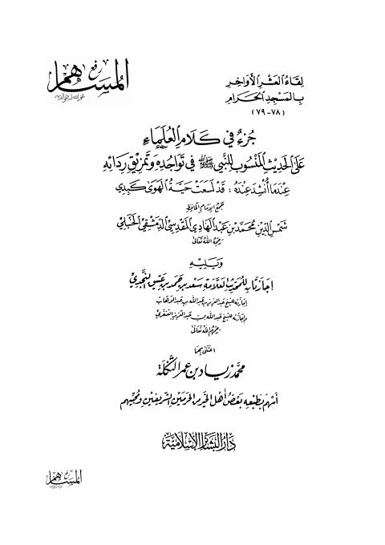

Downloads need an internet connection.
جزء في كلام العلماء على الحديث المنسوب للنبيﷺ في تواجده وتمزيق ردائه
Authors: أحمد بن علي بن حجر العسقلاني
Editors: محمد زياد بن عمر التكلة
Publishers: دار البشائر الإسلامية
**▫️ العنوان: جزء في كلام العلماء على الحديث المنسوب للنبيﷺ في تواجده وتمزيق ردائه** ▪️ المؤلف: #أحمد_بن_علي_بن_حجر_العسقلاني ▫️ المحقق: #محمد_زياد_بن_عمر_التكلة ▪️ الناشر: #دار_البشائر_الإسلامية ▫️ تاريخ النشر: 1426هـ 2005م ▪️ بلد النشر: بيروت، #لبنان ▫️ الطبعة: 1 ▪️ عدد الأجزاء: 1 ▫️ الصفحات: 104 ▪️ نوع الوعاء: #كتاب ▫️ التصنيف الرئيسي: #الحديث_وعلومه ▪️ التصنيف الفرعي: #بحوث_حديثية ۪